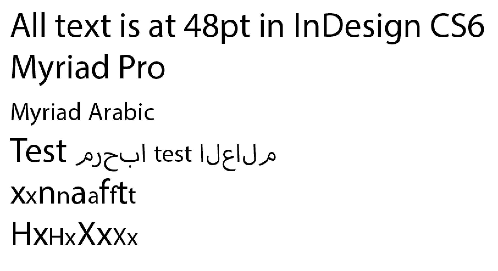
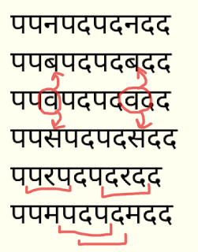

Разработка шрифтов деванагари
Благодарность Adam Twardoch, Erin McLaughlin, Neelakash Kshetrimayum, Dan Reynolds, Pooja Saxena, Dr Girish Dalvi за вклад в многие идеи на этой странице.
Создать новое и оригинальное Деванагари Шрифт следует процессу, очень похожему на процесс создания новой и оригинальной латыни. Уникальное преимущество libre в шрифтах libre заключается в том, что можно изменять и повторно использовать их для новых целей, о которых их первоначальные создатели никогда не думали — например, разработать деванагари и адаптировать существующий латинский шрифт для него.
Деванагари Глифы
Шрифты деванагари содержат эти разные типы глифов:
- consonants (36)
- independent vowels (28)
- vowel maatras
- word space(s)
- Devanagari numerals (10)
- Латинские цифры (новые или, если они уже присутствуют, то скорректированные для работы в чистом тексте деванагари)
- nukta composites
- half-forms
- conjuncts (unique ligature glyphs)
- “I” гласные маатры разной длины
- Пунктуация, знаки и символы деванагари
- Латинская пунктуация, знаки и символы (новые или измененные, если они уже присутствуют)
- Latin letters
Проконсультироваться с Юникод, глава 12 об индийских алфавитах (Страница Деванагари в Юникоде), так же хорошо как Страница разработки шрифтов Microsoft Devanagari OpenType чтобы узнать больше об этих глифах и о том, как работает механизм формирования индийских символов.
Полезно заняться каллиграфией или внимательно изучить руководства по написанию, чтобы узнать, как работает письмо, и понять, какие буквы должны быть похожи на другие буквы по структуре. Эти две страницы из «Руководства по каллиграфии деванагари» Акшараи. может использоваться в качестве эталона для определения угла наклона пера и пропорций букв.
Что делать в первую очередь
При разработке шрифта деванагари и латиницы важно начать с рисования латиницы рядом с деванагари. На самых ранних этапах разрабатываются глифы “key”, чтобы определить индивидуальность шрифта с помощью основных форм и интервалов (которые на латыни могут быть ‘adhesion’ или ‘videospan’). Разработать самые низкие и самые высокие глифы “height extremes” на ранних стадиях процесса.
Понадобится много знаков гласных, чтобы начать тестирование текстуры и масштаба.
Профессор типографии в ИИТ Бомбея доктор Гириш Далви в своей докторской диссертации написал:
По результатам этого исследования сделать вывод, что десять букв अ इ ए ख त भ द ध थ ष может почти передать все формальные свойства остальных букв деванагари. Внутри этих букв буквы अ इ ख भ द ध ष являются наиболее важными, поскольку определяют особенности большинства букв. Следовательно, можно предположить это, сначала разработав эти буквы; Процесс разработки шрифта Деванагари может быть упрощен для студентов и дизайнеров шрифтов, поскольку остальные буквы могут быть получены из них.
Эрин Маклафлин предложила эти глифы в качестве начальной прогрессии: पाव + किमीनुफू + भरसगदह + र्मों ड्डू (крайние высоты) + यथधआछड … продолжить набор символов и предложила сосредоточиться на сочетании знака гласной “Au” + реф + анусвара!, Ма просто предназначена для потомков.
Символы крайних высот позволяют определять вертикальные показатели и масштабировать две системы письма для совместной работы. Adobe публикует очень большие семейства шрифтов, охватывающие самые разные орфографии. Они разделены на семейства с общими пропорциями: Myriad Pro имеет латинский, греческий и кириллический шрифты, но еврейский и арабский дизайны упакованы как отдельные семейства, которые включают латинский дизайн modified.
Вот сопоставление Myriad Pro Latin и Myriad арабского языка:

(Обратить внимание на удачное решение дизайнеров Adobe: высота верхнего регистра латиницы в Myriad Arab равна высоте x в Myriad Pro Latin.)
Обратить внимание, что в наборе символов Lohit самые нижние глифы представляют собой формы, предназначенные для размещения ниже символов, которые опускаются намного ниже базовой линии:
(Vattu — нижняя базовая форма reph. Дополнительная информация на странице Microsoft terminology.)
В идеале должны располагаться ниже нижнего вертикального соединения, как в примере слева (Лохит, который не совсем подходит по вертикали, находится справа):
Интервальный подход
Разработка латинских шрифтов обычно включает в себя ряд таких пробельных строк:
HHxHOHOxOO
nnXnonoXoo
где X представляет букву, на которой сосредоточение, и концепция рассматривает эту букву рядом с несколько плоским символом и круглым символом.
Pa, и Va или Da являются эквивалентами деванагари:
पपXपवपवXवव
पपXपदपदXदद
Когда только начинается проект, начать с полного заполнения страницы Pa, чтобы получить правильный баланс толщины штриха, размера счетчика и интервала.
पपपपपपपपपपपपपपपपपपपपप
Как только Pa получит право “color”, можно начать добавлять другие основные, распространенные символы:
पपपवपपपपपवपववपपव (va, randomized)
पपपापपपपापपाप (Aa maatra, randomized)
पपपदपपपपपदपददपपद (da, randomized)
Затем можно начать использовать показанные выше пробельные строки, чтобы добавить больше глифов:
पपरपदपदरदद
पपकपदपदकदद
पपलपदपदलदद
पपपीपदपदपीदद
и так далее!
Желание просмотреть их в таком длинном списке, чтобы можно было сравнивать один глиф с другим, прокручивая вниз — как на экране, так и при печати. Вертикальная проверка более эффективна, чем просто длинная строка непрерывного текста. Вот почему:
Когда смотреть на строки пробелов в вертикальных столбцах, можно легко сравнить интервал со строками, расположенными ранее выше и ниже текущего символа. Точно так же, как можно легко распознать “rivers” в плохо выровненном полностью выровненном тексте, будет легче увидеть белые пробелы или темные пятна в интервалах, если сравнивать их с пробельной строкой, которая остается постоянной.
Приведенная выше строка интервала позволяет сравнивать очень разные фигуры, чтобы интервал был более равномерным (вместо того, чтобы все круглые символы были слишком свободными или слишком узкими).
А четыре глифа посередине, Pa/Da/Pa/Da, позволяют сравнить тестируемый символ с двумя наборами по три, если просто смотреть на Pa/Da/Pa или Da/Pa/Da.

Нарисовав несколько гласных и согласных и расставив их между собой, можно составить ограниченное количество слов только из этих букв и начать тестировать свой дизайн на реальном тексте.
Структура иерархии работ
В любом проекте по дизайну шрифта отличной идеей будет набросать иерархическую структуру работы.
Для очень опытного человека можно разработать первоначальный легкий и жирный шрифт деванагари примерно за 4–6 месяцев.
Вот пример графика для интерполированного семейства из 9 гирь, вертикальных и наклонных, довольно простой конструкции ‘sans’, созданной очень опытным дизайнером:
| Week | Goal | Glyphs |
|---|---|---|
| 1 | Разработайте дизайн с помощью 7–10 ключевых символов. | 10 |
| 2 | Уточнить, создавать самые высокие глифы, сопоставлять высоту и вес с латиницей, используя обычный и жирный шрифт, тестируровать рендеринг экрана с помощью ttfautohint | 20 |
| 3 | Уточнить пропорции с помощью отзывов читателей | 40 |
| 4 | Получить обратную связь от читателей, уточнить и добавить больше сочетаний | 100 |
| 5 | Получить обратную связь от читателей, уточнить и добавить больше сочетаний | 200 |
| 6 | Получить обратную связь от читателей, уточнить и добавить больше сочетаний | 300 |
| 7 | Получить обратную связь от читателей, уточнить и добавить больше сочетаний | 400 |
| 8 | Получить обратную связь от читателей, уточнить и добавить больше сочетаний | 500 |
| 9 | Получить обратную связь от читателей, уточнить и добавить больше сочетаний | 600 |
| 10 | Получить обратную связь от читателей, уточнить и добавить больше сочетаний | 700 |
| 11 | Получить обратную связь от читателей, уточнить и добавить больше сочетаний | 800 |
| 12 | Получить обратную связь от читателей, уточнить и добавить больше сочетаний | 900 |
| 13 | Вывести жирным шрифтом | 1,800 |
| 14 | Доработки, кернинг, тестирование с учетом отзывов читателей. | 1,800 |
| 15 | Экстраполяция и очистка тонких и черных начертаний, создание и очистка наклонных стилей. | 3,600 |
| 16 | Уточнение интерполированных стилей | 3,600 |
| 17 | Общая доработка интервалов, кернинга и тестирования во всех стилях | 3,600 |
| 18 | Завершение | 3,600 |
Возможно, задача работать со шрифтом, исходный код которого отсутствует, а есть только двоичные таблицы OpenType GPOS/GSUB. Существует несколько инструментов, которые могут преобразовать их в синтаксис Adobe FEA, включая FontForge, но выходные данные каждого инструмента потребуют переработки вручную.
Adobe FDK содержит инструмент ‘spot’, который можно использовать следующим образом:
spot -t GSUB=7 Font.otf > GSUB.fea
Проект Noto имеет dump_otl.py
Собственные приложения ‘Fontlab Studio’ и ‘OpenType Master’ также имеют конвертеры.
Полезные ресурсы
Введение
Где искать вдохновение и идеи
Посмотреть на шрифты Деванагари Indian Type Foundry, и те, которые были только что выпущены через Google Fonts, для вдохновения на разнообразие форм букв.
Еще одно хорошее место для поиска газетных сайтов “e-paper” на хинди, чтобы увидеть реальные используемые шрифты. В рекламных объявлениях — шрифты обычно более разнообразны. Jagran — очень широко распространенная индийская электронная газета.
Flickr также является хорошим источником идей для изображений:
Исторические источники
Взять в свои руки копии «Введения в сценарий деванагари» Х. М. Ламберта, Oxford University Press, 1953 года, и «Типографии деванагари» (три тома) Б. С. Наика, Управление языков, Бомбей, 1971 г.
Помимо этого, есть как минимум два основных источника европейских шрифтов XIX века, на которые стоит обратить внимание: шрифты из Великобритании и шрифты из Германии (в основном из Лейпцига). Эти типы использовались больше для оформления текстов на санскрите, чем для текстов на хинди.
Попробовать также найти образцы 19 и 20 веков текстовые шрифты от индийских литейных мастерских. Они значительно менее европеизированы, как и следовало ожидать. В европейских академических санскритских лицах 19-го века происходят странные вещи, которые, похоже, вообще не появляются в индийской типографии 20-го века. Эти индийские источники, вероятно, труднее найти в западных библиотеках, но, возможно, у Эрин Маклафлин больше источников. Например, линотип «Деванагари» Мэтью Картера 1970-х годов основан на шрифтах литейного завода «Нирная Сагар». Образцы их типов, а также шрифты Бомбейской типографской мастерской должны быть доступны в некоторых западных университетах и/или национальных библиотеках. Также стоило бы взглянуть на Devanagari и Linotype Devanagari от Monotype (версия 1970-х годов и обновление 1980/90-х годов, а не оригинальная версия 1935 года, которая носила только то же имя).
В компании Typefounders в Нидерландах нет шрифта деванагари (Чарльз Энсхеде, Гарри Картер, 1978). Что бы ни делать, не смотреть на шрифты Бодони из его руководства 1818 года.
Некоторые образцы деванагари немецкого производства от H. Berthold AG можно увидеть в Alphabete и Schriftzeichen des Morgen- und des Abendlandes, из Reichsdruckerei, Berlin 1924, p. 45–47.
Статьи
- Саранг Кулкарни написал “Проблемы с типом отображения Деванагари (PDF)”.
- Яшдип Голап написал Разработка текстового шрифта деванагари для использования в газетах (PDF).
- Диссертация MATD Вайбхава Сингха, Деванагари в многострочной типографике.
Lohit2 Деванагари
Lohit2 Devanagari можно использовать в качестве основы для новых шрифтов OFL, используя его список глифов и код макета OpenType. Доступно как оригинальные исходники FontForge или как UFO zip download.
Макет OpenType
Анатомия Деванагари
- TDIL Грамматика письма деванагари (PDF).
- Две страницы из «Руководства по каллиграфии деванагари» Акшараи., что можно использовать в качестве эталона для определения угла наклона пера и пропорций букв.
- Профессор Гириш Давли из IIT Bombay IDC (сравним с Медиа-лабораторией Массачусетского технологического института в США) опубликовал это Статья по анатомии деванагари (PDF).
Если читатель новичок в письме деванагари, важно знать традиционное каллиграфическое ударение пера, которое отличается от латинского. Вот краткая демонстрация угла хода и традиционного взвешивания кривых. Дизайн будет более успешным и менее “Latinized”, если рисовать кривые в соответствии с этими принципами веса, а не вырезать и вставлять части букв латинского алфавита.
Страница Деванагари в Юникоде показаны основные буквы, но не союзы.
Инструменты тестирования
Поддержка Adobe InDesign шрифтов OpenType для неевропейских шрифтов стала надежной только с появлением Creative Cloud и опция абзаца World Ready Composer должна быть включена; даже последнюю версию можно улучшить. Реализации libre harfbuzz и Microsoft OpenType являются наиболее полными, поэтому следует протестировать шрифты в последних версиях Chrome, Firefox и Microsoft Word как в Windows, так и в Mac OS X, чтобы убедиться, что ошибки в формировании связаны со шрифтами.
Страница тестирования Деванагари Пабло Импаллари (с исходники на GitHub!) предоставляет несколько готовых макетов тестирования, и можно перетащить OTF или TTF прямо на страницу, чтобы загрузить его.
Текстовые инструменты Пуджи Саксены (с sources on GitHub!) генерирует тестовые тексты для комбинаций букв.
Adhesion Text Devanagari — это специальная версия инструмента, созданного Мигелем Соузой для создания фиктивного текста, состоящего только из слов, которые можно написать с помощью уже нарисованных глифов. Вставить глифы (अआईईउऊ и так далее), которые нарисованы, и получить несколько примеров слов, которые можно использовать в доказательствах.
Devanaguide от Huerta Tipografica — инструмент с открытым исходным кодом, позволяющий просматривать и сравнивать различные шрифты деванагари. Также позволяет вводить текст и просматривать его во всех шрифтах одновременно. Devanaguide также включает Список слов деванагари, что полезено при разработке тестового текста.
Другие ссылки
Книги и справочники по типографским проектам деванагари — список ресурсов, которые, вероятно, удовлетворят большую часть исследовательских требований большинства проектов. Составлено профессором Гиришем Давли из IIT Bombay IDC.
Обсуждения на форуме
Typophile
Каталог Google Fonts Обсудить